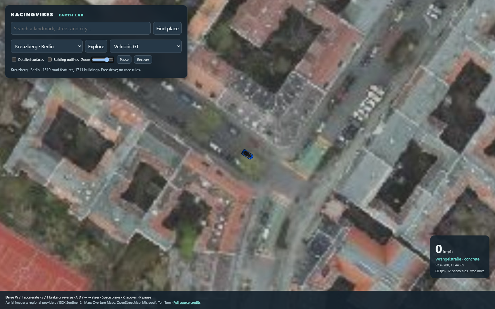
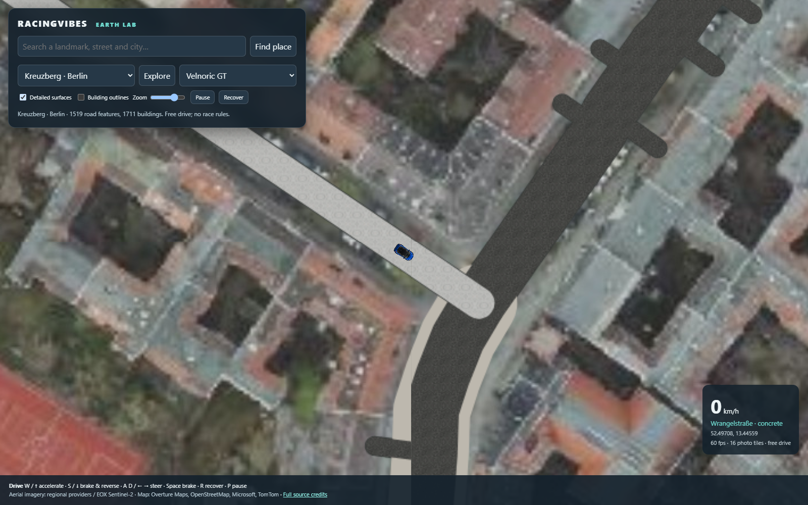
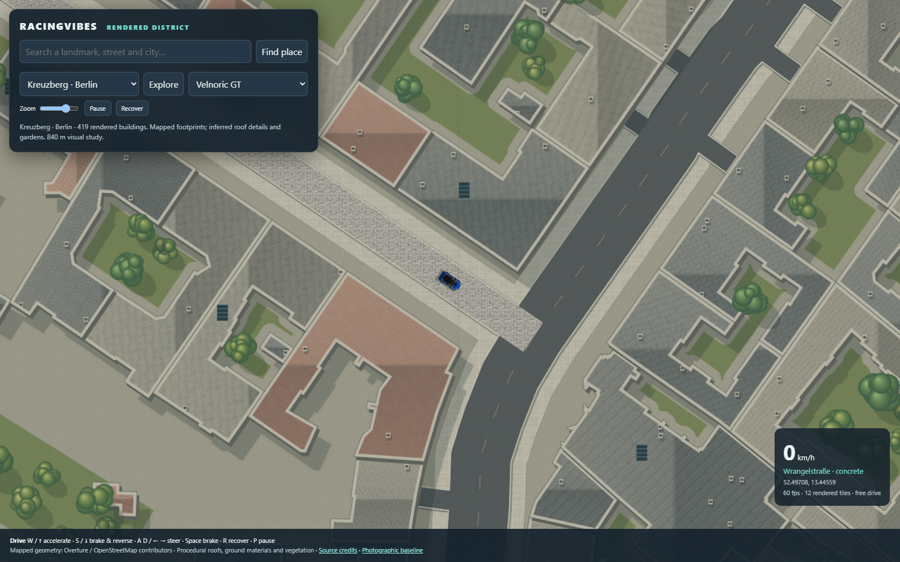
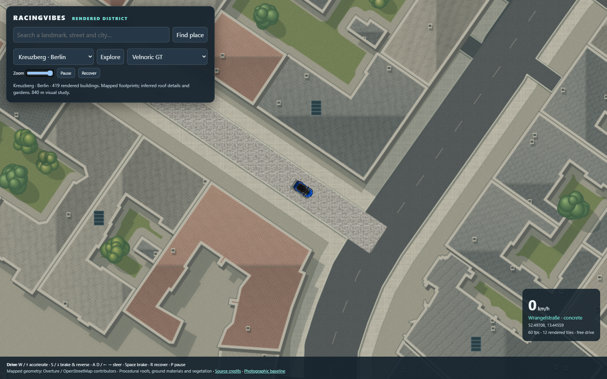

RACINGVIBES · EARTH LAB
A rendered district, rather than an enlarged photograph
Play the rendered Kreuzberg study · Open the preserved photographic prototype
These screenshots use the same starting position, viewport and camera zoom. Building and street geometry comes from the map. Roof appearances where missing, rooftop fittings, courtyard gardens and trees are procedural. This is a bounded visual study, not a claim of surveyed detail or photorealistic replication.
Before · photographic ground

Before · original road overlay

After · geometry-based district

After · close driving zoom

The new study makes no aerial-image requests. The original screenshots retain the imagery attribution visible in their footer. Map data: Overture Maps / OpenStreetMap contributors and upstream sources. See README for source credits, limits and verification.